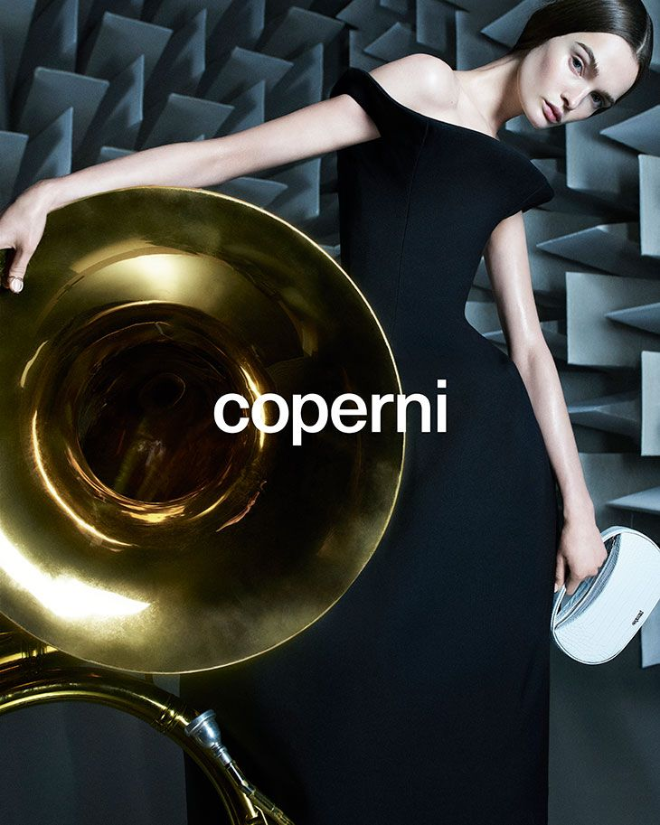

Fashion is often presented as a world of beauty, innovation and endless possibility. Behind every collection, however, there is also a business that must survive. The recent closure of French label Coperni shows how quickly creative success can be affected by financial and organisational problems.
Known for futuristic designs, experimental presentations and a strong connection with technology, Coperni became one of the most recognisable young names in modern fashion. Its founders, Sébastien Meyer and Arnaud Vaillant, announced that the brand would cease operations after eight years following a dispute with its majority shareholder and distributor.
When Creativity Meets Business
Reports connected the closure to a conflict with Tomorrow Ltd. The founders said that unpaid amounts had made it difficult for the label to continue funding its design studio and future development. Coperni had already missed recent fashion weeks and entered legal protection proceedings while efforts were made to save the company.

The story is important because Coperni represented a new fashion ideology. It treated clothing as more than a product. Its shows and designs became cultural moments, especially for younger audiences who experienced fashion through social media, film and digital creativity.
What the Closure Teaches Us
Coperni's closure reflects the pressure facing independent fashion labels. High production costs, expensive marketing, uncertain luxury spending and dependence on outside partners can make growth difficult. Even a brand with international recognition is vulnerable when its creative direction and financial control are not equally secure.
This does not erase Coperni's influence. The label changed how fashion could interact with technology, performance and popular culture. Its end is therefore not only a business story; it is also a reminder that fashion needs both imagination and responsibility.
The Future Beyond the Brand
The founders have suggested that their creative journey will continue. That possibility makes Coperni's ending feel less like the disappearance of an idea and more like the closing of one chapter. Its designs, experiments and visual language will remain part of the conversation about the future of fashion.
Coperni's story ultimately asks a difficult question: how can fashion remain daring without becoming financially fragile? The answer may lie in building brands where creativity and sustainability grow together.
← Back to Blogs